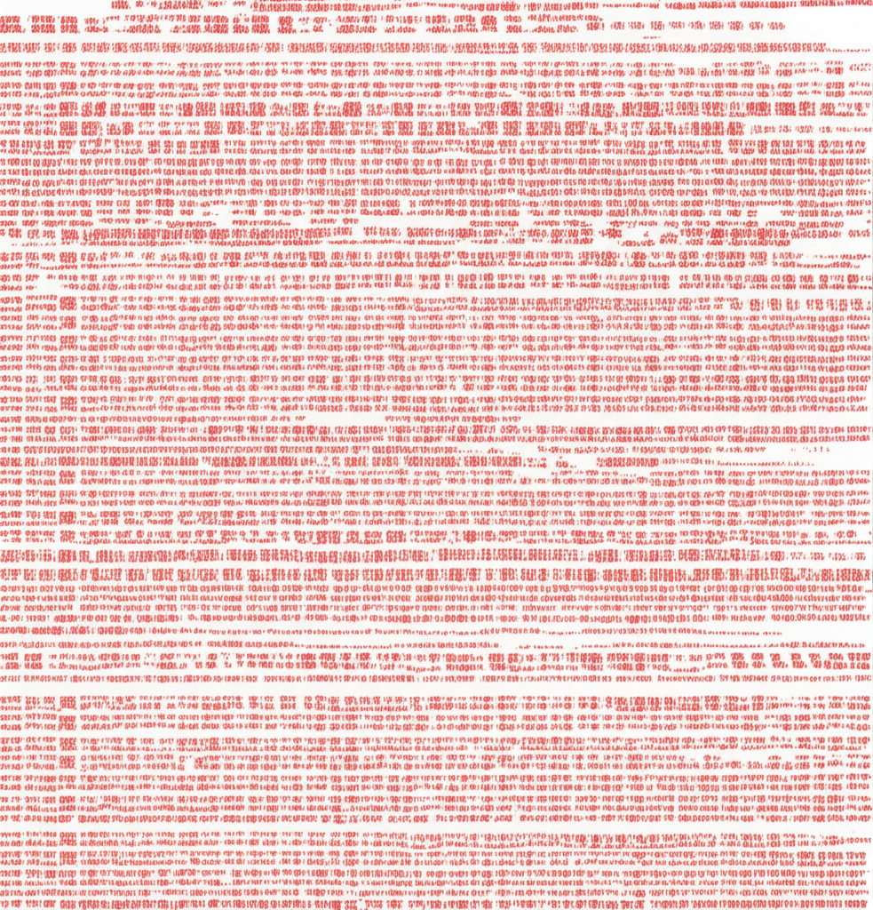

近期健康醫療新聞聚焦於心血管疾病、腎臟保健以及常見慢性病的預防與控制。百歲人瑞主動脈剝離、腦動脈瘤的早期發現、壞膽固醇的控制，以及台灣洗腎人口居高不下等議題，都顯示了現代人對於健康管理的重視。同時，高血壓的飲食控制與藥物交互作用也受到廣泛關注。
從新聞中可見，心血管疾病的風險無處不在，甚至連高齡且經常運動的長者也可能面臨主動脈剝離的威脅。這提醒我們，除了家族病史、高血壓等已知風險因素外，定期健康檢查的重要性。另外，7旬婦健檢發現腦動脈瘤並及時以微創手術處理，也顯示了早期發現早期治療的優勢。控制血壓，特別是有糖尿病、心血管疾病等情況者，將目標血壓控制在130/80mmHg以下，是預防心血管疾病的重要一環。
台灣洗腎人口居冠的新聞令人憂心，尤其糖尿病、高血壓、高血脂、肥胖等風險族群更是高危險群。這強調了及早控制這些慢性病，以及定期檢查腎功能的必要性。新聞中提到長庚腎醫提供5種症狀作為警訊，提醒民眾留意身體變化，及早發現問題。
即使飲食清淡，高血壓仍可能發生，這顯示了除了鈉的攝取外，其他營養素也可能影響血壓。另一方面，服用特定藥物時應避免同時飲用咖啡，以免影響藥效或產生不良反應。這些新聞強調了尋求專業醫療建議，了解個人狀況並制定合適的飲食和用藥計畫的重要性。
綜觀近期健康醫療新聞，心血管疾病的預防與控制、腎臟保健，以及慢性病的管理是民眾應關注的重點。透過定期健康檢查、維持健康的生活習慣、及早控制慢性病，以及諮詢專業醫療建議，才能有效降低疾病風險，維護自身健康。